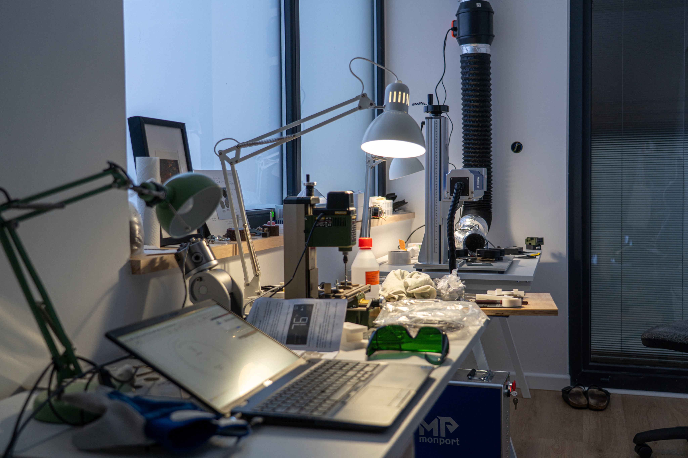
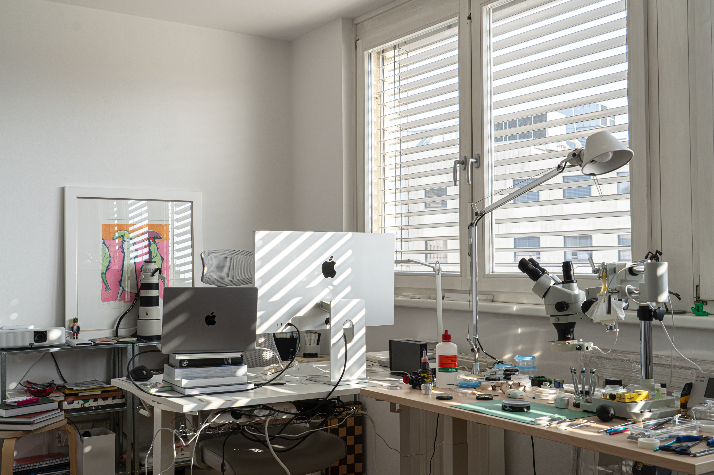

Our Story
Built by hand, one step at a time.
Viktor Watch started as a simple idea: make something real, slowly, carefully, and with enough conviction that it could stand on its own.

Where it starts
Not mass-produced. Built with hands.
These watches are built by me, in my workshop, and always will be. That part of Viktor Watch is not going to change.
The fixtures, the dust, the failed parts, the repeated sanding, the small improvements - they are not separate from the watch. They are the reason the final object has weight.
The process is the product.

Why it matters
Every detail was thought through.
When something is made on a small scale, every improvement matters. Every mistake teaches something. Every finished watch carries the weight of all the versions that came before it.

The physical work
Good objects are often defined by the work you no longer see.
Much of the process is repetitive. Some of it is frustrating. Some of it has to be redone entirely. But that unseen work is what gives the final watch its character.